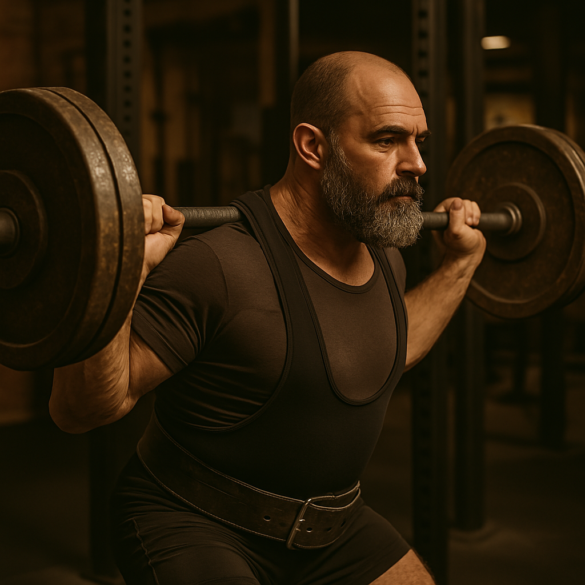

Цикл на силу
(12 тижнів)
Досвідчений

Читати далі
Силовий цикл для троєборця, який підійде атлетам рівнем КМС-МС, адже був протестований на спортсменах такого рівня і зарекомендував себе, як ефективний. Програма використовує хвильову періодизацію з поступовим зростанням інтенсивності тренувань. Цикл розрахований на людей, які мають високий рівень виконання вправ, тож допускаються деякі корегування в ході виконання цього мезоциклу. Спортсмен має мати хорошу розтяжку, кути та загальна техніка обов'язково мають бути на високому рівні.